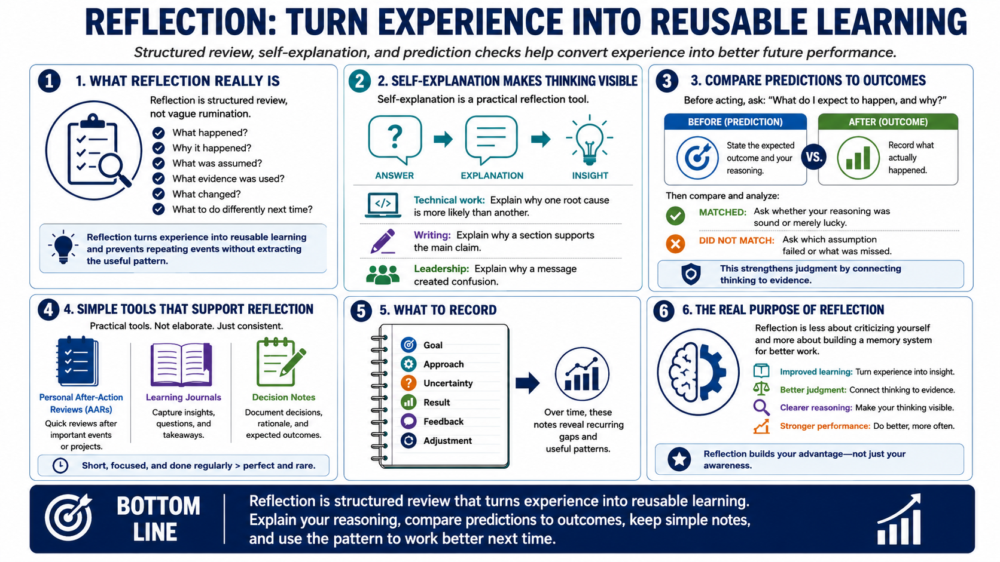

Reflection and Self-Explanation
Connecting to LMS... Progress: in progress

Narration
Reflection is structured review, not vague rumination. It asks what happened, why it happened, what was assumed, what evidence was used, what changed, and what should be done differently next time. Reflection turns experience into reusable learning. Without it, people may repeat events without extracting the pattern that would improve future performance.
Self-explanation is one of the most practical reflection tools. Instead of only naming the answer, explain why the answer works, why a step matters, or why an error happened. In technical work, this might mean explaining why one root cause is more likely than another. In writing, it might mean explaining why a section supports the main claim. In leadership, it might mean explaining why a message created confusion.
Comparing predictions to outcomes strengthens reflection. Before acting, make a prediction: what do I expect to happen, and why? Afterward, compare the result. If the outcome matched, ask whether the reasoning was actually sound or merely lucky. If it did not match, ask which assumption failed. This habit improves judgment because it connects thinking to evidence.
Personal after-action reviews, learning journals, and decision notes can make reflection easier. They do not need to be elaborate. Record the goal, the approach, the uncertainty, the result, the feedback, and the adjustment. Over time, those notes reveal recurring gaps and useful patterns. Reflection becomes less about criticizing yourself and more about building a memory system for better work.